산업안전지도사 (2022-03-19 기출문제)
1과목: 산업안전보건법령
1. 산업안전보건법령상 관계수급인 근로자가 도급인의 사업장에서 작업을 하는 경우 도급인의 안전조치 및 보건조치에 관한 설명으로 옳지 않은 것은?
- 도급인은 같은 장소에서 이루어지는 도급인과 관계수급인의 작업에 있어서 관계수급인의 작업시기ㆍ내용, 안전조치 및 보건조치 등을 확인하여야 한다.
- 건설업의 경우에는 도급사업의 정기 안전ㆍ보건 점검을 분기에 1회 이상 실시하여야 한다.
- 관계수급인의 공사금액을 포함한 해당 공사의 총공사금액이 20억원 이상인 건설업의 경우 도급인은 그 사업장의 안전보건관리책임자를 안전보건총괄책임자로 지정하여야 한다.
- 도급인은 도급인과 수급인을 구성원으로 하는 안전 및 보건에 관한 협의체를 도급인 및 그의 수급인 전원으로 구성하여야 한다.
- 도급인은 제조업 작업장의 순회점검을 2일에 1회 이상 실시하여야 한다.
(정답률: 알수없음)

2. 산업안전보건법령상 ‘대여자 등이 안전조치 등을 해야 하는 기계ㆍ기구ㆍ설비 및 건축물 등’에 규정되어 있는 것을 모두 고른 것은? (단, 고용노동부장관이 정하여 고시하는 기계ㆍ기구ㆍ설비 및 건축물 등은 고려하지 않음)
- ㄱ, ㄴ
- ㄱ, ㄷ
- ㄴ, ㄹ
- ㄱ, ㄷ, ㄹ
- ㄴ, ㄷ, ㄹ
(정답률: 알수없음)
3. 산업안전보건법령상 유해하거나 위험한 기계ㆍ기구에 대한 방호조치 등에 관한 설명으로 옳은 것을 모두 고른 것은?
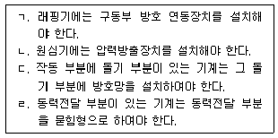
- ㄱ
- ㄱ, ㄴ
- ㄴ, ㄷ
- ㄷ, ㄹ
- ㄱ, ㄷ, ㄹ
(정답률: 알수없음)
4. 산업안전보건법령상 사업주가 근로자의 작업내용을 변경할 때에 그 근로자에게 하여야 하는 안전보건교육의 내용으로 규정되어 있지 않은 것은?
- 사고 발생 시 긴급조치에 관한 사항
- 기계ㆍ기구의 위험성과 작업의 순서 및 동선에 관한 사항
- 표준안전 작업방법에 관한 사항
- 직장 내 괴롭힘, 고객의 폭언 등으로 인한 건강장해 예방 및 관리에 관한 사항
- 작업 개시 전 점검에 관한 사항
(정답률: 알수없음)
5. 산업안전보건법령상 안전검사에 관한 설명으로 옳지 않은 것은?
- 형 체결력(型締結力) 294킬로뉴턴(KN) 이상의 사출성형기는 안전검사대상기계 등에 해당한다.
- 사업주는 자율안전검사를 받은 경우에는 그 결과를 기록하여 보존하여야 한다.
- 안전검사기관이 안전검사 업무를 게을리하거나 업무에 차질을 일으킨 경우 고용노동부장관은 안전검사기관 지정을 취소하거나 6개월 이내의 기간을 정하여 그 업무의 정지를 명할 수 있다.
- 곤돌라를 건설현장에서 사용하는 경우 사업장에 최초로 설치한 날부터 6개월마다 안전검사를 하여야 한다.
- 안전검사대상기계등을 사용하는 사업주와 소유자가 다른 경우에는 사업주가 안전검사를 받아야 한다.
(정답률: 알수없음)
6. 산업안전보건법령상 제조 또는 사용허가를 받아야 하는 유해물질을 모두 고른 것은? (단, 고용노동부장관의 승인을 받은 경우는 제외함)
- ㄱ, ㄴ, ㄷ
- ㄱ, ㄷ, ㅁ
- ㄱ, ㄹ, ㅁ
- ㄴ, ㄷ, ㄹ
- ㄴ, ㄹ, ㅁ
(정답률: 알수없음)
7. 산업안전보건법령상 중대재해에 속하는 경우를 모두 고른 것은?
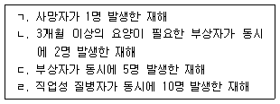
- ㄱ
- ㄴ, ㄷ
- ㄷ, ㄹ
- ㄱ, ㄴ, ㄹ
- ㄱ, ㄴ, ㄷ, ㄹ
(정답률: 알수없음)
8. 산업안전보건법령상 안전인증에 관한 설명으로 옳은 것은?
- 안전인증 심사 중 유해ㆍ위험기계등이 서면심사 내용과 일치하는지와 유해ㆍ위험기계등의 안전에 관한 성능이 안전인증기준에 적합한지에 대한 심사는 기술능력 및 생산체계 심사에 해당한다.
- 거짓이나 그 밖의 부정한 방법으로 안전인증을 받은 사유로 안전인증이 취소된 자는 안전인증이 취소된 날부터 3년 이내에는 취소된 유해ㆍ위험기계등에 대하여 안전인증을 신청할 수 없다.
- 크레인, 리프트, 곤돌라는 설치ㆍ이전하는 경우뿐만 아니라 주요 구조 부분을 변경하는 경우에도 안전인증을 받아야 한다.
- 안전인증기관은 안전인증을 받은 자가 최근 2년 동안 안전인증표시의 사용금지를 받은 사실이 없는 경우에는 안전인증기준을 지키고 있는지를 3년에 1회이상 확인해야 한다.
- 안전인증대상기계등이 아닌 유해ㆍ위험기계등을 제조하는 자는 그 유해ㆍ위험 기계등의 안전에 관한 성능을 평가받기 위하여 고용노동부장관에게 안전인증을 신청할 수 없다.
(정답률: 알수없음)
9. 산업안전보건법령상 상시근로자 1000명인 A회사(「상법」제170조에 따른 주식회사)의 대표이사 甲이 수립해야 하는 회사의 안전 및 보건에 관한 계획에 포함되어야 하는 내용이 아닌 것은?
- 안전 및 보건에 관한 경영방침
- 안전ㆍ보건관리 업무 위탁에 관한 사항
- 안전ㆍ보건관리 조직의 구성ㆍ인원 및 역할
- 안전ㆍ보건 관련 예산 및 시설 현황
- 안전 및 보건에 관한 전년도 활동실적 및 다음 연도 활동계획
(정답률: 알수없음)
10. 산업안전보건법령상 안전관리전문기관에 대해 그 지정을 취소하여야 하는 경우는?
- 업무정지 기간 중에 업무를 수행한 경우
- 안전관리 업무 관련 서류를 거짓으로 작성한 경우
- 정당한 사유 없이 안전관리 업무의 수탁을 거부한 경우
- 안전관리 업무 수행과 관련한 대가 외에 금품을 받은 경우
- 법에 따른 관계 공무원의 지도ㆍ감독을 거부ㆍ방해 또는 기피한 경우
(정답률: 알수없음)
11. 산업안전보건법령상 통합공표 대상 사업장 등에 관한 내용이다. ( )에 들어갈 사업으로 옳지 않은 것은?
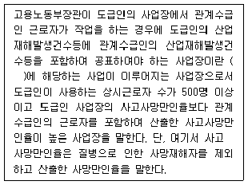
- 제조업
- 철도운송업
- 도시철도운송업
- 도시가스업
- 전기업
(정답률: 알수없음)
12. 산업안전보건법령상 자율안전확인의 신고에 관한 설명으로 옳지 않은 것은?
- 자율안전확인대상기계등을 제조하는 자가「산업표준화법」제15조에 따른 인증을 받은 경우 고용노동부장관은 자율안전확인신고를 면제할 수 있다.
- 산업용 로봇, 혼합기, 파쇄기, 컨베이어는 자율안전확인대상기계등에 해당한다.
- 자율안전확인대상기계등을 수입하는 자로서 자율안전확인신고를 하여야 하는 자는 수입하기 전에 신고서에 제품의 설명서, 자율안전확인대상기계등의 자율안전기준을 충족함을 증명하는 서류를 첨부하여 한국산업안전보건공단에 제출해야 한다.
- 자율안전확인의 표시를 하는 경우 인체에 상해를 입힐 우려가 있는 재질이나 표면이 거친 재질을 사용해서는 안 된다.
- 고용노동부장관은 신고된 자율안전확인대상기계등의 안전에 관한 성능이 자율안전기준에 맞지 아니하게 된 경우 신고한 자에게 1년 이내의 기간을 정하여 자율안전기준에 맞게 시정하도록 명할 수 있다.
(정답률: 알수없음)
13. 산업안전보건법령상 공정안전보고서에 포함되어야 하는 사항을 모두 고른 것은?
- ㄱ
- ㄴ, ㄹ
- ㄷ, ㄹ
- ㄱ, ㄴ, ㄷ
- ㄱ, ㄴ, ㄷ, ㄹ
(정답률: 알수없음)
14. 산업안전보건법령상 사업장의 상시근로자 수가 50명인 경우에 산업안전보건위원회를 구성해야 할 사업은?
- 컴퓨터 프로그래밍, 시스템 통합 및 관리업
- 소프트웨어 개발 및 공급업
- 비금속 광물제품 제조업
- 정보서비스업
- 금융 및 보험업
(정답률: 알수없음)
15. 산업안전보건법령상 사업주가 관리감독자에게 수행하게 하여야 하는 산업안전 및 보건에 관한 업무로 명시되지 않은 것은?
- 산업재해에 관한 통계의 기록 및 유지에 관한 사항
- 사업장 내 관리감독자가 지휘ㆍ감독하는 작업과 관련된 기계ㆍ기구 또는 설비의 안전ㆍ보건 점검 및 이상 유무의 확인
- 관리감독자에게 소속된 근로자의 작업복ㆍ보호구 및 방호장치의 점검과 그 착용ㆍ사용에 관한 교육ㆍ지도
- 해당작업에서 발생한 산업재해에 관한 보고 및 이에 대한 응급조치
- 해당작업의 작업장 정리ㆍ정돈 및 통로 확보에 대한 확인ㆍ감독
(정답률: 알수없음)
16. 산업안전보건법령상 도급승인 대상 작업에 관한 것으로 “급성 독성, 피부부식성 등이 있는 물질의 취급 등 대통령령으로 정하는 작업”에 관한 내용이다. ( )에 들어갈 내용을 순서대로 옳게 나열한 것은?
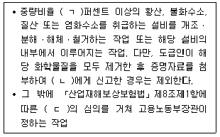
- ㄱ: 1, ㄴ: 고용노동부장관, ㄷ: 산업재해보상보험및예방심의위원회
- ㄱ: 1, ㄴ: 한국산업안전보건공단 이사장, ㄷ: 산업재해보상보험및예방심의위원회
- ㄱ: 2, ㄴ: 고용노동부장관, ㄷ: 산업재해보상보험및예방심의위원회
- ㄱ: 2, ㄴ: 지방고용노동관서의 장, ㄷ: 산업안전보건심의위원회
- ㄱ: 3, ㄴ: 고용노동부장관, ㄷ: 산업안전보건심의위원회
(정답률: 알수없음)
17. 산업안전보건법령상 보건관리자에 관한 설명으로 옳지 않은 것은?
- 상시근로자 300명 이상을 사용하는 사업장의 사업주는 보건관리자에게 그 업무만을 전담하도록 하여야 한다.
- 안전인증대상기계등과 자율안전확인대상기계등 중 보건과 관련된 보호구(保護具) 구입 시 적격품 선정에 관한 보좌 및 지도ㆍ조언은 보건관리자의 업무에 해당한다.
- 외딴곳으로서 고용노동부장관이 정하는 지역에 있는 사업장의 사업주는 보건관리전문기관에 보건관리자의 업무를 위탁할 수 있다.
- 보건관리자의 업무를 위탁할 수 있는 보건관리전문기관은 지역별 보건관리전문기관과 업종별ㆍ유해인자별 보건관리전문기관으로 구분한다.
- 「의료법」에 따른 간호사는 보건관리자가 될 수 없다.
(정답률: 알수없음)
18. 산업안전보건법령상 안전보건관리규정(이하 “규정”이라 함)에 관한 설명으로 옳은 것은?
- 안전 및 보건에 관한 관리조직은 규정에 포함되어야 하는 사항이 아니다.
- 규정 중 취업규칙에 반하는 부분에 관하여는 규정으로 정한 기준이 취업규칙에 우선하여 적용된다.
- 산업안전보건위원회가 설치되어 있지 아니한 사업장의 사업주가 규정을 작성할 때에는 지방고용노동관서의 장의 승인을 받아야 한다.
- 사업주가 규정을 작성할 때에는 산업안전보건위원회의 심의ㆍ의결을 거쳐야 하나, 변경할 때에는 심의만 거치면 된다.
- 규정을 작성해야 하는 사업의 사업주는 규정을 작성해야 할 사유가 발생한 날부터 30일 이내에 작성해야 한다.
(정답률: 알수없음)
19. 산업안전보건법령상 고용노동부장관이 안전관리전문기관 또는 보건관리전문기관의 지정을 취소하거나 6개월 이내의 기간을 정하여 그 업무의 정지를 명할 수 있도록 하는 규정이 준용되는 기관이 아닌 것은?
- 안전보건교육기관
- 안전보건진단기관
- 건설재해예방전문지도기관
- 역학조사 실시 업무를 위탁받은 기관
- 석면조사기관
(정답률: 알수없음)
20. 산업안전보건법령상 사업주가 작업환경측정을 할 때 지켜야 할 사항으로 옳은 것을 모두 고른 것은?
- ㄱ, ㄹ
- ㄴ, ㄷ
- ㄷ, ㄹ
- ㄱ, ㄴ, ㄹ
- ㄱ, ㄴ, ㄷ, ㄹ
(정답률: 알수없음)
21. 산업안전보건법령상 같은 유해인자에 노출되는 근로자들에게 유사한 질병의 증상이 발생한 경우에 고용노동부장관은 근로자의 건강을 보호하기 위하여 사업주에게 특정 근로자에 대해 건강진단을 실시할 것을 명할 수 있다. 이에 해당하는 건강진단은?
- 일반건강진단
- 특수건강진단
- 배치전건강진단
- 임시건강진단
- 수시건강진단
(정답률: 알수없음)
22. 산업안전보건법령상 유해성ㆍ위험성 조사 제외 화학물질로 규정되어 있지 않은 것은? (단, 고용노동부장관이 공표하거나 고시하는 물질은 고려하지 않음)
- 「의료기기법」제2조제1항에 따른 의료기기
- 「약사법」제2조제4호 및 제7호에 따른 의약품 및 의약외품(醫藥外品)
- 「건강기능식품에 관한 법률」제3조제1호에 따른 건강기능식품
- 「첨단재생의료 및 첨단바이오의약품 안전 및 지원에 관한 법률」제2조제5호에 따른 첨단바이오의약품
- 천연으로 산출된 화학물질
(정답률: 알수없음)
23. 산업안전보건법령상 작업환경측정 또는 건강진단의 실시 결과만으로 직업성 질환에 걸렸는지를 판단하기 곤란한 근로자의 질병에 대하여 한국산업안전보건공단에 역학조사를 요청할 수 있는 자로 규정되어 있지 않은 자는?
- 사업주
- 근로자대표
- 보건관리자
- 건강진단기관의 의사
- 산업안전보건위원회의 위원장
(정답률: 알수없음)
24. 산업안전보건법령상 징역 또는 벌금에 처해질 수 있는 자는?
- 작업환경측정 결과를 해당 작업장 근로자에게 알리지 아니한 사업주
- 등록하지 아니하고 타워크레인을 설치ㆍ해체한 자
- 석면이 포함된 건축물이나 설비를 철거하거나 해체하면서 고용노동부령으로 정하는 석면해체ㆍ제거의 작업기준을 준수하지 아니한 자
- 역학조사 참석이 허용된 사람의 역학조사 참석을 방해한 자
- 물질안전보건자료대상물질을 양도하면서 이를 양도받는 자에게 물질안전보건 자료를 제공하지 아니한 자
(정답률: 알수없음)
25. 산업안전보건법령상 근로의 금지 및 제한에 관한 설명으로 옳은 것은?
- 사업주가 잠수 작업에 종사하는 근로자에게 1일 6시간, 1주 36시간 근로하게 하는 것은 허용된다.
- 사업주는 알코올중독의 질병이 있는 근로자를 고기압 업무에 종사하도록 해서는 안 된다.
- 사업주가 조현병에 걸린 사람에 대해 근로를 금지하는 경우에는 미리 보건관리자(의사가 아닌 보건관리자 포함), 산업보건의 또는 건강검진을 실시한 의사의 의견을 들어야 한다.
- 사업주는 마비성 치매에 걸릴 우려가 있는 사람에 대해 근로를 금지해야 한다.
- 사업주는 전염될 우려가 있는 질병에 걸린 사람이 있는 경우 전염을 예방하기 위한 조치를 한 후에도 그 사람의 근로를 금지해야 한다.
(정답률: 알수없음)
2과목: 산업안전일반
26. 리스크 관리의 용어 정의에 관한 지침에서 “가능성과 결과에 대한 범위를 구분하여 리스크 등급을 표시하고, 리스크 우선순위를 정하기 위한 도구”로 정의되는 용어는?
- 리스크 통합(Risk aggregation)
- 리스크 프로파일(Risk profile)
- 리스크 수준 판정(Risk evaluation)
- 리스크 기준(Risk criteria)
- 리스크 매트릭스(Risk matrix)
(정답률: 알수없음)
27. 안전교육의 단계별 과정 중 태도교육의 내용이 아닌 것은?
- 작업동작 및 표준작업방법의 습관화
- 공구ㆍ보호구 등의 관리 및 취급태도의 확립
- 작업 전후 점검 및 검사요령의 정확화 및 습관화
- 작업지시ㆍ전달 등의 언어ㆍ태도의 정확화 및 습관화
- 작업에 필요한 안전규정 숙지
(정답률: 알수없음)
28. 학습지도원리에 해당하지 않는 것은?
- 자발성의 원리
- 개별화의 원리
- 사회화의 원리
- 도미노 이론의 원리
- 직관의 원리
(정답률: 알수없음)
29. 산업안전보건법령상 안전보건교육에서 다음 작업의 특별교육 교육내용이 아닌 것은? (단, 그 밖에 안전ㆍ보건관리에 필요한 사항은 고려하지 않는다.)
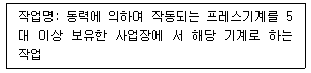
- 프레스의 특성과 위험성에 관한 사항
- 방호장치 종류와 취급에 관한 사항
- 안전작업방법에 관한 사항
- 국소배기장치 및 안전설비에 관한 사항
- 프레스 안전기준에 관한 사항
(정답률: 알수없음)
30. OJT(on the job training)에 비하여 Off JT(off the job training)의 장점으로 옳은 것을 모두 고른 것은?
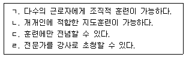
- ㄱ, ㄴ
- ㄴ, ㄷ
- ㄱ, ㄷ, ㄹ
- ㄴ, ㄷ, ㄹ
- ㄱ, ㄴ, ㄷ, ㄹ
(정답률: 알수없음)
31. 사업장 위험성평가에 관한 지침에서 사업주는 위험성평가를 효과적으로 실시하기 위하여 위험성평가 실시규정을 작성하고 관리하여야 한다. 이때 실시규정에 포함되어야 할 사항이 아닌 것은?
- 평가의 목적 및 방법
- 인정심사위원회의 구성ㆍ운영
- 평가담당자 및 책임자의 역할
- 평가시기 및 절차
- 주지방법 및 유의사항
(정답률: 알수없음)
32. 산업안전보건법령상 고용노동부장관이 사업주에게 안전보건진단을 받아 안전보건개선계획을 수립하여 시행할 것을 명할 수 있는 사업장으로 옳지 않은 것은?
- 산업재해율이 같은 업종 평균 산업재해율의 1.5배인 사업장
- 사업주가 필요한 안전조치를 이행하지 아니하여 중대재해가 발생한 사업장
- 직업성 질병자가 연간 2명 발생한 상시근로자 900명인 사업장
- 직업성 질병자가 연간 3명 발생한 상시근로자 1,500명인 사업장
- 작업환경 불량, 화재ㆍ폭발 또는 누출 사고 등으로 사업장 주변까지 피해가 확산된 사업장으로서 고용노동부령으로 정하는 사업장
(정답률: 알수없음)
33. 작업장의 도구, 부품, 조종장치 배치에서 작업의 효율성 향상을 위해 적용하는 원리가 아닌 것은?
- 일관성 원리
- 중요도 원리
- 독창성 원리
- 사용 순서의 원리
- 사용 빈도의 원리
(정답률: 알수없음)
34. 인간-기계 시스템에서 표시장치(display)와 조종장치(control)의 설계에 관한 내용으로 옳지 않은 것은?
- 작업자의 즉각적 행동이 필요한 경우에 청각적 표시장치가 시각적 표시장치보다 유리하다.
- 330 m 이상 정도의 장거리에 신호를 전달하고자 할 때는 청각 신호의 주파수를 1,000 Hz 이하로 하는 것이 좋다.
- 광삼현상으로 인해 음각(검은 바탕의 흰 글씨)의 글자 획폭(stroke width)은 양각(흰 바탕의 검은 글씨)보다 작은 값이 권장된다.
- 조종-반응 비(C/R 비)가 작을수록 조종장치와 표시장치의 민감도가 낮아져 미세조종에 유리하다.
- 공간적 양립성은 표시장치와 조종장치의 배치와 관련된다.
(정답률: 알수없음)
35. 인간-컴퓨터 상호작용에서 닐슨(J. Nielsen)이 정의한 사용성의 세부 속성에 해당하지 않는 것은?
- 적합성(conformity)
- 학습 용이성(learnability)
- 기억 용이성(memorability)
- 주관적 만족도(subjective satisfaction)
- 오류의 빈도와 정도(error frequency and severity)
(정답률: 알수없음)
36. 사업장 위험성평가에 관한 지침에서 위험성평가의 실시에 관한 내용으로 옳지 않은 것은?
- 위험성평가는 최초평가 및 수시평가, 정기평가로 구분하여 실시하여야 한다.
- 최초평가 및 정기평가는 전체작업을 대상으로 한다.
- 중대산업사고 또는 산업재해(휴업 이상의 요양을 요하는 경우에 한정한다) 발생시에는 재해발생 작업을 대상으로 작업을 재개하기 전에 수시평가를 실시하여야한다.
- 사업장 건설물의 설치ㆍ이전ㆍ변경 또는 해체 계획이 있는 경우에는 해당 계획의 실행을 착수하기 전에 수시평가를 실시하여야 한다.
- 정기평가는 최초평가 후 2년에 1회 실시하여야 한다.
(정답률: 알수없음)
37. 재해 조사 과정에서 수행해야 할 절차 내용을 순서대로 옳게 나열한 것은?
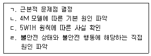
- ㄱ → ㄴ → ㄷ → ㄹ
- ㄴ → ㄱ → ㄷ → ㄹ
- ㄷ → ㄴ → ㄹ → ㄱ
- ㄷ → ㄹ → ㄴ → ㄱ
- ㄹ → ㄷ → ㄱ → ㄴ
(정답률: 알수없음)
38. 산업재해 연구에 관한 내용으로 옳은 것을 모두 고른 것은?
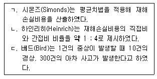
- ㄱ
- ㄷ
- ㄱ, ㄴ
- ㄴ, ㄷ
- ㄱ, ㄴ, ㄷ
(정답률: 알수없음)
39. 시력이 1.2인 사람이 6 m 떨어진 곳에서 구분할 수 있는 벌어진 틈의 최소 크기(mm)는? (단, 소수점 둘째자리에서 반올림하여 소수점 첫째자리까지 구하시오.)
- 1.0
- 1.3
- 1.5
- 1.7
- 1.9
(정답률: 알수없음)
40. 근골격계부담작업 유해성 평가를 위한 인간공학적 도구에 관한 내용으로 옳지 않은 것은?
- RULA는 하지 자세를 평가에 반영한다.
- REBA는 동작의 반복성을 평가에 반영한다.
- QEC는 작업자의 주관적 평가 과정이 포함되어 있다.
- OWAS는 중량물 취급 정도를 평가에 반영한다.
- NLE는 중량물의 수평 이동거리를 평가에 반영한다.
(정답률: 알수없음)
41. 신뢰도 이론의 욕조곡선(bathtub curve)을 나타낸 것으로 옳은 것은? (단, t: 시간, h(t): 고장률, f(t): 확률밀도함수, F(t): 불신뢰도 이다.)
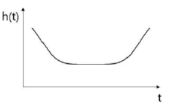
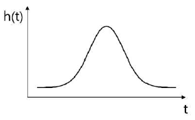
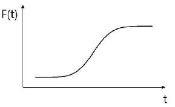
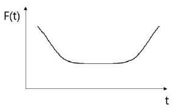
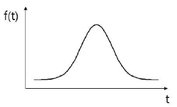
(정답률: 알수없음)
42. 2,500명의 근로자가 근무하는 사업장의 재해율(천인율)은 1.6, 도수율은 0.8, 강도율은 1.2이었다. 이 사업장의 연간 재해발생건수와 근로손실일수로 옳은 것은? (단, 1일 8시간, 연간 250일 근무하는 것으로 가정한다.)
- 재해발생건수: 4건, 근로손실일수: 4,000일
- 재해발생건수: 4건, 근로손실일수: 6,000일
- 재해발생건수: 6건, 근로손실일수: 6,000일
- 재해발생건수: 6건, 근로손실일수: 8,000일
- 재해발생건수: 8건, 근로손실일수: 8,000일
(정답률: 알수없음)
43. 라스무센(Rasmussen)의 SRK 모델을 근거로 리전(J. Reason)이 제안한 인적오류 분류에 관한 내용으로 옳은 것을 모두 고른 것은?
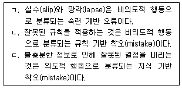
- ㄱ
- ㄴ
- ㄱ, ㄷ
- ㄴ, ㄷ
- ㄱ, ㄴ, ㄷ
(정답률: 알수없음)
44. 신뢰성 수명분포 중 지수분포에 관한 내용으로 옳은 것을 모두 고른 것은?
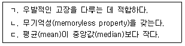
- ㄱ
- ㄷ
- ㄱ, ㄴ
- ㄴ, ㄷ
- ㄱ, ㄴ, ㄷ
(정답률: 알수없음)
45. 예방보전에 해당하지 않는 것은?
- 기회보전
- 고장보전
- 수명기반보전
- 시간기반보전
- 상태기반보전
(정답률: 알수없음)
46. 어떤 사고의 발생건수는 연평균 1회로 포아송(Poisson)분포를 따른다. 이 사고가 3년 동안 한 건도 발생하지 않을 확률은 얼마인가? (단, 소수점 셋째자리에서 반올림하여 소수점 둘째자리까지 구하시오.)
- 0.⑤
- 0.15
- 0.25
- 0.33
- 0.50
(정답률: 알수없음)
47. 다음에서 설명하고 있는 위험성평가 기법은?
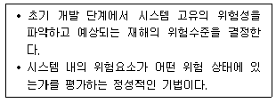
- CA
- FMEA
- MORT
- THERP
- PHA
(정답률: 알수없음)
48. 시스템 안전성 확보를 위한 방법이 아닌 것은?
- 위험상태 존재의 최소화
- 중복설계(redundancy)의 배제
- 안전장치의 채용
- 경보장치의 채택
- 인간공학적 설계의 적용
(정답률: 알수없음)
49. 서로 독립인 기본사상 a, b, c로 구성된 아래의 결함수(Fault Tree)에서 정상사상 T에 관한 최소절단집합(minimal cut set)을 모두 구하면?
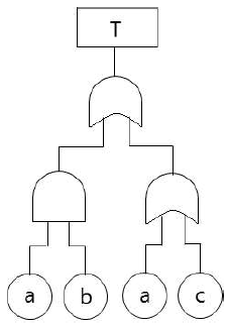
- {a}
- {a, b}
- {a, c}
- {a}, {b}
- {a}, {c}
(정답률: 알수없음)
50. 안전성평가 종류 중 기술개발의 종합평가(technology assessment)에서 단계별 내용으로 옳지 않은 것은?
- 1 단계: 생산성 및 보전성
- 2 단계: 실현가능성
- 3 단계: 안전성 및 위험성
- 4 단계: 경제성
- 5 단계: 종합 평가
(정답률: 알수없음)
3과목: 기업진단ㆍ지도
51. 균형성과표(BSC: Balanced Score Card)에서 조직의 성과를 평가하는 관점이 아닌 것은?
- 재무 관점
- 고객 관점
- 내부 프로세스 관점
- 학습과 성장 관점
- 공정성 관점
(정답률: 알수없음)
52. 노사관계에서 숍제도(shop system)를 기본적인 형태와 변형적인 형태로 구분할 때, 기본적인 형태를 모두 고른 것은?
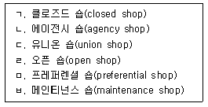
- ㄱ, ㄴ, ㄷ
- ㄱ, ㄷ, ㄹ
- ㄱ, ㄷ, ㅂ
- ㄴ, ㄹ, ㅁ
- ㄴ, ㅁ, ㅂ
(정답률: 알수없음)
53. 홉스테드(G. Hofstede)가 국가 간 문화차이를 비교하는데 이용한 차원이 아닌 것은?
- 성과지향성(performance orientation)
- 개인주의 대 집단주의(individualism vs collectivism)
- 권력격차(power distance)
- 불확실성 회피성향(uncertainty avoidance)
- 남성적 성향 대 여성적 성향(masculinity vs feminity)
(정답률: 알수없음)
54. 레윈(K. Lewin)의 조직변화의 과정으로 옳은 것은?
- 점검(checking) - 비전(vision) 제시 - 교육(education) - 안정(stability)
- 구조적 변화 - 기술적 변화 - 생각의 변화
- 진단(diagnosis) - 전환(transformation) - 적응(adaptation) - 유지(maintenance)
- 해빙(unfreezing) - 변화(changing) - 재동결(refreezing)
- 필요성 인식 - 전략수립 - 실행 - 해결 - 정착
(정답률: 알수없음)
55. 하우스(R. House)의 경로-목표 이론(path-goal theory)에서 제시되는 리더십 유형이 아닌 것은?
- 지시적 리더십(directive leadership)
- 지원적 리더십(supportive leadership)
- 참여적 리더십(participative leadership)
- 성취지향적 리더십(achievement-oriented leadership)
- 거래적 리더십(transactional leadership)
(정답률: 알수없음)
56. 재고관리에 관한 설명으로 옳은 것은?
- 재고비용은 재고유지비용과 재고부족비용의 합이다.
- 일반적으로 재고는 많이 비축할수록 좋다.
- 경제적주문량(EOQ) 모형에서 재고유지비용은 주문량에 비례한다.
- 1회 주문량을 Q라고 할 때, 평균재고는 Q/3이다.
- 경제적주문량(EOQ) 모형에서 발주량에 따른 총 재고비용선은 역U자 모양이다.
(정답률: 알수없음)
57. 품질경영에 관한 설명으로 옳은 것은?
- 품질비용은 실패비용과 예방비용의 합이다.
- R-관리도는 검사한 물품을 양품과 불량품으로 나누어서 불량의 비율을 관리하고자 할 때 이용한다.
- ABC품질관리는 품질규격에 적합한 제품을 만들어 내기 위해 통계적 방법에 의해 공정을 관리하는 기법이다.
- TQM은 고객의 입장에서 품질을 정의하고 조직 내의 모든 구성원이 참여하여 품질을 향상하고자 하는 기법이다.
- 6시그마운동은 최초로 미국의 애플이 혁신적인 품질개선을 목적으로 개발한 기업경영전략이다.
(정답률: 알수없음)
58. JIT(Just In Time) 생산시스템의 특징에 해당하지 않는 것은?
- 부품 및 공정의 표준화
- 공급자와의 원활한 협력
- 채찍효과 발생
- 다기능 작업자 필요
- 칸반시스템 활용
(정답률: 알수없음)
59. 1년 중 여름에 아이스크림의 매출이 증가하고 겨울에는 스키 장비의 매출이 증가한다고 할 때, 이를 설명하는 변동은?
- 추세변동
- 공간변동
- 순환변동
- 계절변동
- 우연변동
(정답률: 알수없음)
60. 업무를 수행 중인 종업원들로부터 현재의 생산성 자료를 수집한 후 즉시 그들에게 검사를 실시하여 그 검사 점수들과 생산성 자료들과의 상관을 구하는 타당도는?
- 내적 타당도(internal validity)
- 동시 타당도(concurrent validity)
- 예측 타당도(predictive validity)
- 내용 타당도(content validity)
- 안면 타당도(face validity)
(정답률: 알수없음)
61. 직무분석에 관한 설명으로 옳지 않은 것은?
- 직무분석가는 여러 직무 간의 관계에 관하여 정확한 정보를 주는 정보 제공자이다.
- 작업자 중심 직무분석은 직무를 성공적으로 수행하는데 요구되는 인적 속성들을 조사함으로써 직무를 파악하는 접근 방법이다.
- 작업자 중심 직무분석에서 인적 속성은 지식, 기술, 능력, 기타 특성 등으로 분류할 수 있다.
- 과업 중심 직무분석 방법의 대표적인 예는 직위분석질문지(Position Analysis Questionnaire)이다.
- 직무분석의 정보 수집 방법 중 설문조사는 효율적이며 비용이 적게 드는 장점이 있다.
(정답률: 알수없음)
62. 리전(J. Reason)의 불안전행동에 관한 설명으로 옳지 않은 것은?
- 위반(violation)은 고의성 있는 위험한 행동이다.
- 실책(mistake)은 부적절한 의도(계획)에서 발생한다.
- 실수(slip)는 의도하지 않았고 어떤 기준에 맞지 않는 것이다.
- 착오(lapse)는 의도를 가지고 실행한 행동이다.
- 불안전행동 중에는 실제 행동으로 나타나지 않고 당사자만 인식하는 것도 있다.
(정답률: 알수없음)
63. 작업동기 이론에 관한 설명으로 옳은 것을 모두 고른 것은?
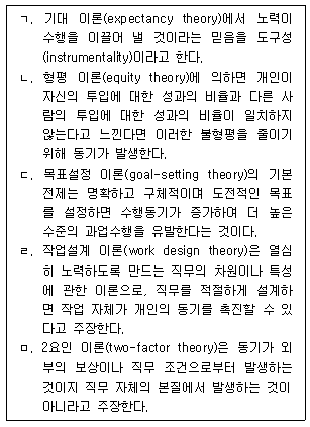
- ㄱ, ㄴ, ㅁ
- ㄱ, ㄷ, ㄹ
- ㄴ, ㄷ, ㄹ
- ㄴ, ㄹ, ㅁ
- ㄷ, ㄹ, ㅁ
(정답률: 알수없음)
64. 직업 스트레스 모델에 관한 설명으로 옳지 않은 것은?
- 노력-보상 불균형 모델(Effort-Reward Imbalance Model)은 직장에서 제공하는 보상이 종업원의 노력에 비례하지 않을 때 종업원이 많은 스트레스를 느낀다고 주장한다.
- 요구-통제 모델(Demands-Control Model)에 따르면 작업장에서 스트레스가 가장 높은 상황은 종업원에 대한 업무 요구가 높고 동시에 종업원 자신이 가지는 업무통제력이 많을 때이다.
- 직무요구-자원 모델(Job Demands-Resources Model)은 업무량 이외에도 다양한 요구가 존재한다는 점을 인식하고, 이러한 다양한 요구가 종업원의 안녕과 동기에 미치는 영향을 연구한다.
- 자원보존 모델(Conservation of Resources Model)은 자원의 실제적 손실 또는 손실의 위협이 종업원에게 스트레스를 경험하게 한다고 주장한다.
- 사람-환경 적합 모델(Person-Environment Fit Model)에 의하면 종업원은 개인과 환경 간의 적합도가 낮은 업무 환경을 스트레스원(stressor)으로 지각한다.
(정답률: 알수없음)
65. 산업재해의 인적 요인이라고 볼 수 없는 것은?
- 작업 환경
- 불안전행동
- 인간 오류
- 사고 경향성
- 직무 스트레스
(정답률: 알수없음)
66. 인간의 일반적인 정보처리 순서에서 행동실행 바로 전 단계에 해당하는 것은?
- 자극
- 지각
- 주의
- 감각
- 결정
(정답률: 알수없음)
67. 조명의 측정단위에 관한 설명으로 옳은 것을 모두 고른 것은?
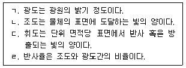
- ㄱ, ㄷ
- ㄴ, ㄹ
- ㄱ, ㄴ, ㄷ
- ㄱ, ㄷ, ㄹ
- ㄱ, ㄴ, ㄷ, ㄹ
(정답률: 알수없음)
68. 아래의 그림에서 a에서 b까지의 선분 길이와 c에서 d까지의 선분 길이가 다르게 보이지만 실제로는 같다. 이러한 현상을 나타내는 용어는?
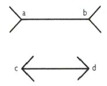
- 포겐도르프(Poggendorf) 착시현상
- 뮬러-라이어(Muller-Lyer) 착시현상
- 폰조(Ponzo) 착시현상
- 죌너(Zollner) 착시현상
- 티체너(Titchener) 착시현상
(정답률: 알수없음)
69. 유해인자와 주요 건강 장해의 연결이 옳지 않은 것은?
- 감압환경: 관절 통증
- 일산화탄소: 재생불량성 빈혈
- 망간: 파킨슨병 유사 증상
- 납: 조혈기능 장해
- 사염화탄소: 간독성
(정답률: 알수없음)
70. 우리나라에서 발생한 대표적인 직업병 집단 발생 사례들이다. 가장 먼저 발생한 것부터 연도순으로 나열한 것은?
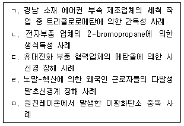
- ㄱ → ㄴ → ㄷ → ㄹ → ㅁ
- ㄱ → ㅁ → ㄹ → ㄷ → ㄴ
- ㄹ → ㄷ → ㄴ → ㄱ → ㅁ
- ㅁ → ㄴ → ㄹ → ㄷ → ㄱ
- ㅁ → ㄹ → ㄷ → ㄴ → ㄱ
(정답률: 알수없음)
71. 국소배기장치에 관한 설명으로 옳은 것을 모두 고른 것은?
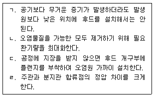
- ㄱ, ㄴ
- ㄱ, ㄷ
- ㄴ, ㄹ
- ㄷ, ㄹ
- ㄱ, ㄴ, ㄷ, ㄹ
(정답률: 알수없음)
72. 수동식 시료채취기(passive sampler)에 관한 설명으로 옳지 않은 것은?
- 간섭의 원리로 채취한다.
- 장점은 간편성과 편리성이다.
- 작업장 내 최소한의 기류가 있어야 한다.
- 시료채취시간, 기류, 온도, 습도 등의 영향을 받는다.
- 매우 낮은 농도를 측정하려면 능동식에 비하여 더 많은 시간이 소요된다.
(정답률: 알수없음)
73. 화학물질 및 물리적 인자의 노출기준에서 STEL에 관한 설명이다. ( )안의 ㄱ, ㄴ, ㄷ을 모두 합한 값은?
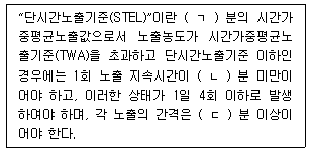
- 15
- 30
- 65
- 90
- 1⑤
(정답률: 알수없음)
74. 라돈에 관한 설명으로 옳지 않은 것은?
- 색, 냄새, 맛이 없는 방사성 기체이다.
- 밀도는 9.73 g/L로 공기보다 무겁다.
- 국제암연구기구(IARC)에서는 사람에게서 발생하는 폐암에 대하여 제한적 증거가 있는 group 2A로 분류하고 있다.
- 고용노동부에서는 작업장에서의 노출기준으로 600 Bq/m3를 제시하고 있다.
- 미국 환경보호청(EPA)에서는 4 pCi/L를 규제기준으로 제시하고 있다.
(정답률: 알수없음)
75. 세균성 질환이 아닌 것은?
- 파상풍(tetanus)
- 탄저병(anthrax)
- 레지오넬라증(legionnaires’ disease)
- 결핵(tuberculosis)
- 광견병(rabies)
(정답률: 알수없음)
건설업에서는 도급사업의 안전ㆍ보건 점검 대신에 도급인이 안전보건관리책임자를 지정하고, 안전보건관리계획을 수립하여야 한다는 것이 중요한데, 이는 건설현장에서의 안전과 보건을 보장하기 위한 조치이다.